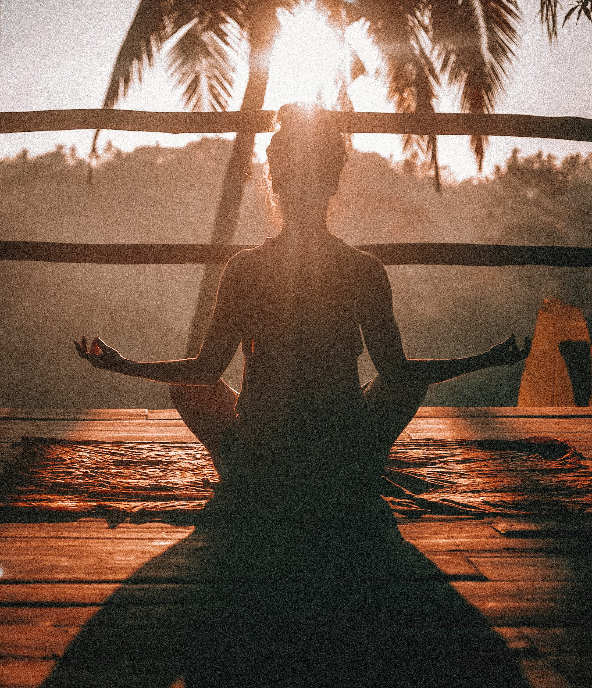

HAVEN JOURNAL
Energi och fokus i vardagen – nyckeln till ett balanserat liv
Upptäck hur dagens distraktioner och tempo dränerar din energi – och lär dig enkla sätt att återfå fokus, balans och kraft i vardagen.
Varför energi och fokus är så centralt
I dagens samhälle är våra dagar fyllda med krav, intryck och ständiga distraktioner. Vi jagar deadlines, scrollar genom flöden, multitaskar mellan arbete och privatliv – och ofta utan att ens märka hur mycket energi vi egentligen tappar på vägen. Energi och fokus är inte bara abstrakta begrepp; de är fundamentet för vårt välmående, vår kreativitet och vår förmåga att leva närvarande.
Att ha låg energi eller splittrat fokus påverkar allt: hur vi löser problem, hur vi interagerar med andra och hur vi känner oss själva. När vi inte kan koncentrera oss på det som verkligen betyder något – vare sig det är arbete, relationer eller egen återhämtning – blir livet mindre tillfredsställande och kroppen signalerar ofta med trötthet, irritation eller stress.
Hur samhället tar energi och stjäl fokus
Samhället omkring oss är byggt för att maximera prestation och konsumtion, inte för att vår kropp och vårt sinne ska få återhämtning. Vi matas med notiser, reklam, krav på ständig uppkoppling och sociala jämförelser. Varje gång vi bryts från en aktivitet, ett samtal eller en uppgift, förlorar hjärnan fokus och energi. Det är en subtil, men konstant dränering som vi ofta inte reflekterar över förrän vi känner oss helt slutkörda.
Denna energiläckage påverkar både kroppen och sinnet. Kortisolnivåerna kan höjas, hjärnan blir tröttare, och känslan av kontroll och närvaro minskar. Att konstant byta mellan uppgifter eller ständigt reagera på yttre stimuli skapar ett liv där vi aldrig riktigt är “här och nu” – och därmed förlorar vi en betydande del av vårt mentala och emotionella välmående.
Att förstå detta är första steget mot förändring. För när vi väl ser hur vardagens små energitjuvar påverkar oss, kan vi börja skapa medvetna strategier för att skydda vår energi, återfinna fokus och uppleva mer balans och närvaro i livet.
Konsekvenser på kropp och sinne
När energi och fokus saknas reagerar både kroppen och sinnet. Vi kan uppleva:
- Fysiska effekter: trötthet, huvudvärk, spänningar i nacke och rygg, nedsatt immunförsvar.
- Mentala effekter: svårt att koncentrera sig, glömska, minskad kreativitet, snabbare irritabilitet.
- Emotionella effekter: känsla av överväldigande, oro, låg motivation eller frustration.
Ju längre vi lever med brist på energi och fokus, desto större risk för stressrelaterade problem, både kort- och långsiktigt. Att identifiera var våra energiläckor uppstår är avgörande för att kunna återta kontrollen över våra dagar och vårt välmående.

Praktiska strategier för energi och fokus
Att återställa energi och fokus kräver medvetna handlingar. Här är några konkreta strategier:
-
Mikropauser och återställande stunder
- Ta 5 minuter varje timme för att andas, sträcka på kroppen eller kort reflektion.
- Små pauser minskar mental trötthet och ökar koncentration.
-
Prioritera uppgifter
- Fokusera på en sak i taget och skapa block för djup koncentration.
- Undvik multitasking som dränerar energi och fragmenterar fokus.
-
Fysisk aktivitet och rörelse
- Lätt träning, promenader eller yoga stimulerar både kropp och hjärna.
- Regelbunden rörelse stärker energinivåer och minskar stress.
-
Digital detox
- Sätt tider utan telefon, mail och sociala medier.
- Skapa medvetna stunder utan distraktioner för att återställa fokus.
-
Återkommande rutiner och sömn
- Stabil sömn och rutiner för måltider och pauser stärker energireserverna.
- Kvällsrutiner som minskar skärmtid främjar djupare vila och återhämtning.
Med små, konsekventa förändringar kan vi skydda energi, återfinna fokus och skapa en vardag där vi lever mer närvarande och balanserat.

Haven Nordic Health-perspektivet
På Haven Nordic Health ser vi energi och fokus som nyckeln till ett hållbart liv. Vi erbjuder både kunskap och praktiska verktyg som hjälper människor att återta kontrollen över sina dagar och känna sig mer närvarande.
Våra metoder inkluderar:
- Digitalt innehåll: Artiklar, övningar samt shorts och reels inom energi, fokus och återhämtning.
- Coaching och samtalsstöd: Individuell vägledning för att förstå energiläckor, bygga rutiner och stärka fokus.
- Retreat och fysiska upplevelser: I framtiden erbjuder vi retreats där kroppen och sinnet får maximal möjlighet att vila, återställa energi och växa.
Vår vision är att varje person ska kunna skapa en vardag där energi och fokus inte är ett undantag, utan en självklar del av livet.
Reflektera och dela
Ta en stund att fundera över hur du skyddar din energi och återvinner fokus under dagen. Vilka små steg kan du ta redan idag för att känna dig mer närvarande och energifylld?
Dela gärna artikeln med någon som behöver påminnas om vikten av energi och fokus, eller sprid insikterna vidare på dina sociala medier.
Följ Haven Nordic Health på Instagram och Facebook för fler tips, artiklar och inspiration om balans, energi och närvaro i vardagen.